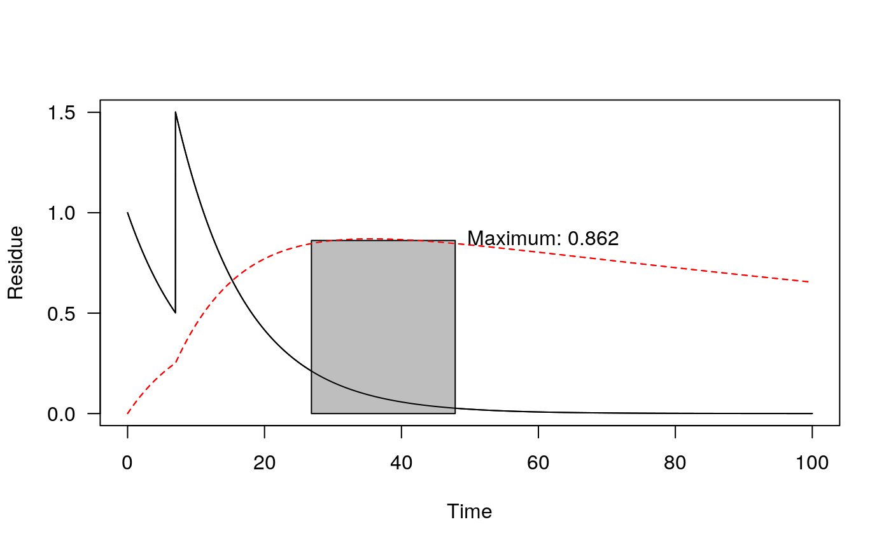

Plot time series of decline data
# S3 method for one_box plot(x, xlim = range(time(x)), ylim = c(0, max(x)), xlab = "Time", ylab = "Residue", max_twa = NULL, max_twa_var = dimnames(x)[[2]][1], ...)
| x | The object of type |
|---|---|
| xlim | Limits for the x axis |
| ylim | Limits for the y axis |
| xlab | Label for the x axis |
| ylab | Label for the y axis |
| max_twa | If a numeric value is given, the maximum time weighted average concentration(s) is/are shown in the graph. |
| max_twa_var | Variable for which the maximum time weighted average should be shown if max_twa is not NULL. |
| ... | Further arguments passed to methods |
# Use a fitted mkinfit model m_2 <- mkinmod(parent = mkinsub("SFO", "m1"), m1 = mkinsub("SFO"))#>fit_2 <- mkinfit(m_2, FOCUS_2006_D, quiet = TRUE) pred_2 <- one_box(fit_2, ini = 1) pred_2_saw <- sawtooth(pred_2, 2, 7) plot(pred_2_saw, max_twa = 21, max_twa_var = "m1")